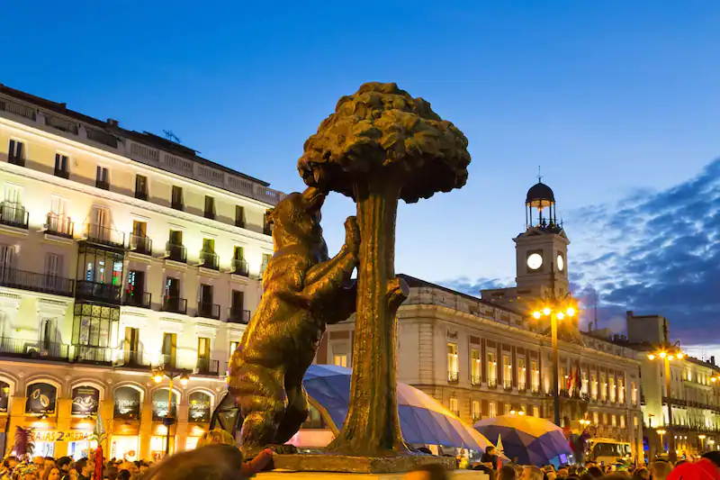
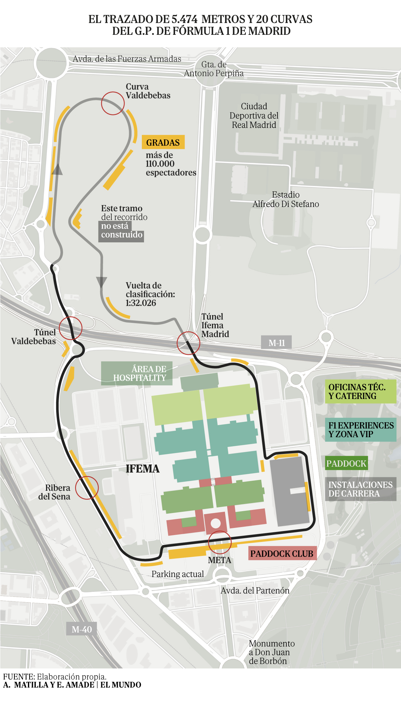
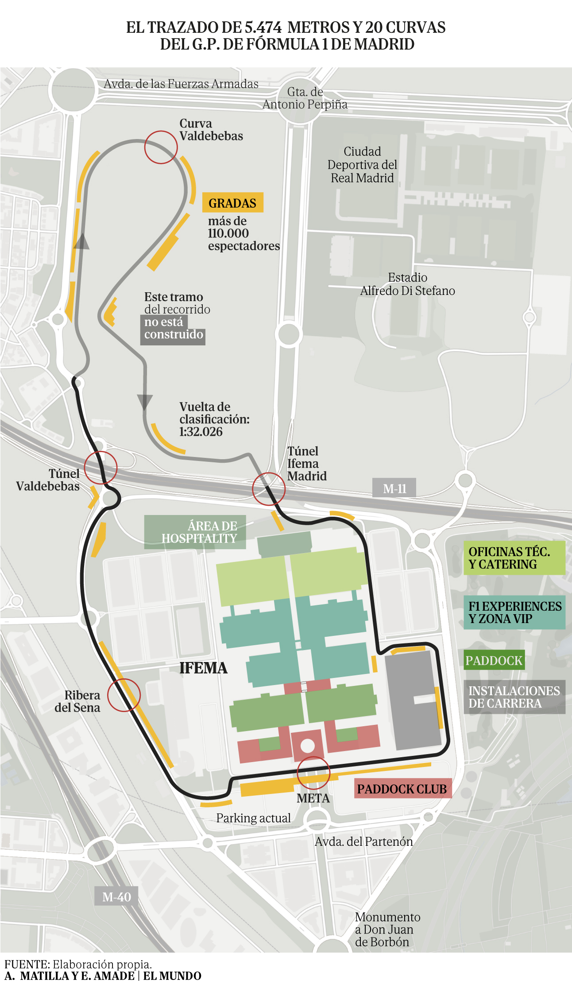
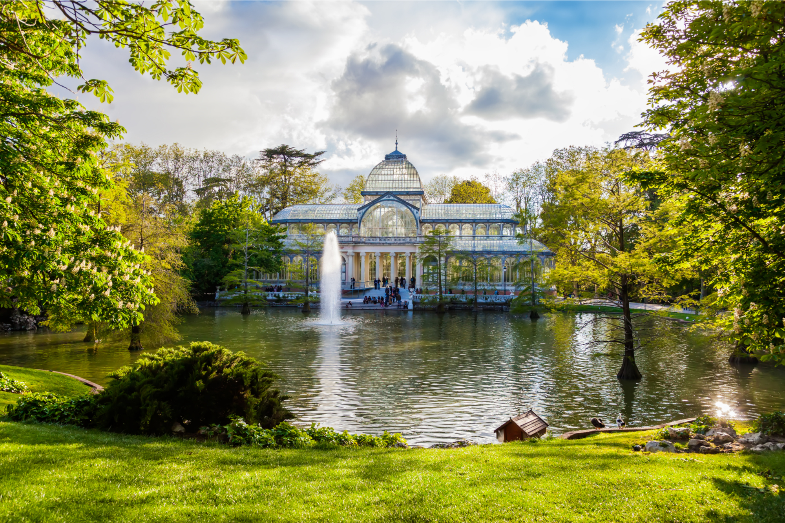

Noticias
La Fórmula 1 volverá a Madrid en 2026 con un circuito urbano en Ifema

La Fórmula 1 volverá a Madrid en 2026 con un circuito urbano en Ifema
El Museo del Prado, joya cultural de Madrid, alberga una impresionante colección de obras maestras europeas. Desde las pinceladas magistrales de Velázquez hasta los grabados cautivadores de Goya, este museo es un festín visual para los amantes del arte.

El Parque del Retiro, pulmón verde de la ciudad, ofrece un remanso de paz. Sus frondosos jardines, el tranquilo lago y la arquitectura única, como el Palacio de Cristal, crean un entorno ideal para pasear, relajarse o disfrutar de actividades al aire libre en el corazón de Madrid.
La Plaza Mayor, icónica y animada, es el punto neurálgico de la historia y la vida urbana de Madrid. Rodeada de edificios de estilo barroco, la plaza acoge cafés al aire libre, tiendas encantadoras y eventos culturales. La estatua ecuestre de Felipe III preside este emblemático lugar, testigo de la vitalidad de la capital española.